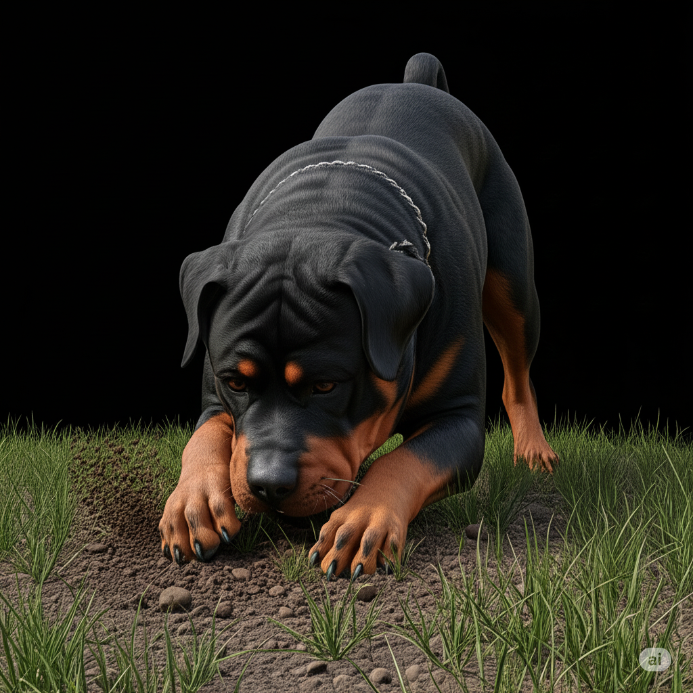

Hora 08:12 a.m. El humano dejó el sofá desprotegido mientras servía café.
Me infiltré en posición, camuflado entre las cobijas. Todo iba bien... hasta que estornudé.
Fui detectado y reubicado al “piso frío de la vergüenza”. Operación fallida.
Solicito refuerzos y una manta.
Alerta Roja: La bestia rugiente atacó de nuevo
10:02 a.m. La paz reinaba... hasta que se oyó el rugido.
La aspiradora volvió. Esa bestia ruidosa que devora pelusas y mis sueños.
Corrí, ladré, giré en círculos como ninja eléctrico.
El humano solo reía, ¡¿cómo puede confiar en esa criatura con ruedas?!
Esta guerra no ha terminado... me estoy preparando con refuerzos (el gato).
Interrogatorio emocional: Éxito total
Usé la técnica de “mirada triste con orejitas caídas”. Resultado: premio doble.
Luego, fingí estar enfermo. Resultado: me cargaron como a un príncipe.
Conclusión: el humano sigue siendo emocionalmente manipulable.
Recomiendo repetir cada martes.
Operación Bistec Sagrado: Robo con precisión quirúrgica
Hora 12:47 p.m. Detecté un aroma celestial proveniente de la cocina. El objetivo:
un bistec jugoso, cocido a la perfección, reposando desprevenido sobre la mesa.
Activé modo sigilo. El humano se distrajo con una llamada.
Salté, capturé, y corrí a mi refugio secreto (debajo de la cama).
Resultado: misión completada, carne 80% asegurada.
El 20% restante cayó al suelo y fue devorado por el gato. Estoy considerando su traición.
Misión Río Mojado: Aventura acuática no autorizada
El humano dijo: “Vamos a dar un paseo corto”. Mentira. Era una emboscada hacia el río.
Detecté charcos, barro fresco, y arbustos perfectos para mis necesidades.
Corrí, me zambullí, revolqué y cacé hojas flotantes como si fueran enemigos.
Al regresar al carro, el humano me miró como si hubiera traicionado a la patria.
Pero en mi corazón... fui libre. Y muy, muy mojado.

Archivo X-42: El hueso fantasma
Enterré mi hueso favorito en el jardín. Lo marqué con 4 patas, una hoja seca y un estornudo.
Volví al día siguiente… y nada. Solo pasto. Y una mirada sospechosa del gato.
Estoy investigando un posible secuestro interdimensional. O que el humano usó la pala otra vez.
De cualquier modo, se avecina venganza.
Agente R por el día… Payaso por la noche
Me disfrazaron. Otra vez. Esta vez con un gorro de cumpleaños, una capa rosada y gafas de sol.
“¡Estás adorable!”, dijo el humano. Adorable, mi colita.
En ese momento perdí parte de mi dignidad, pero gané 4 galletas.
¿Fue humillante? Sí. ¿Lo volvería a hacer por snacks? También sí.
Reflejo mortal: El perro que me imitaba
Hoy descubrí algo terrible: hay otro perro en casa. Me mira fijamente.
Hace lo mismo que yo. ¡Al mismo tiempo!
Intenté tocarlo con la pata, pero una pared invisible lo protege.
Estoy sospechando tecnología alienígena.
El humano dijo: “Rocky, eres tú mismo”. Pero eso es lo que ellos quieren que crea...